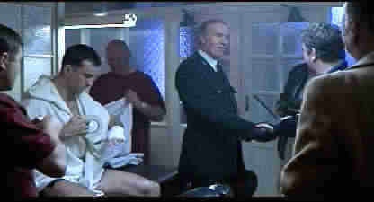

Boxer, The/B+,A-
Universal/1997/114m/ANA WS 1.66
Framing a love story with the violent conflict of Northern Ireland could be considered a dicey proposition, but that's what writer/director Jim Sheridan has chosen as the path for his latest film. Will relationships disappear in the barrage of bombs, dwarfed by the larger issues or will the war simply become an impediment to true love. Sheridan likes the tight rope and he dances across the war torn streets with the dexterity of a teller of street tales.
 |
Danny prepares to fight. ©Universal |
Danny Flynn, a former boxing
phenom, is released from prison after serving 14 years for IRA acts against the State.
Flynn wants to get on with his life. In prison, he rejected the overtures of the IRA,
remaining a tight-lipped loner. Now, he wants no part of the IRA or the horror of civil
war. He wants back the life that was interrupted prematurely. But there are complexities
beyond his control. He's still in love with the girl he left behind, only she married his
best friend in the interim and she also happens to be the daughter of the leader of the
IRA. Danny tries to make his statements in the ring, but the past doesn't want to die.
Sheridan has proved a great director of actors in the few films
he has directed. Maybe it's his own roots as an actor. His players have room to breath and
express their characters. Working with Daniel Day-Lewis for the third time is certainly no
hardship. The actor gives a thoroughly believable performance as Danny Flynn. Hey, no way
I'd step into the ring with this guy.(Day-Lewis trained for two years to make his screen
punches authentic.)Emily Watson is Danny's lost love, Maggie, and she infuses the role
with an openess. Ken Stott is fine as trainer Ike Weir, but it is the IRA guys, Brian Cox,
Gerard McSorley and David Hayman, that are eerily on target in their portrayals.
The stunning DVD transfer preserves the magnificent lighting of
cinematographer Chris Menges. Painting with light, Menges sculpts the characters in shadow
and light, delicately revealing shades of character. While much of the film has a
de-saturated look for a feeling of black and white, the splashed of blood here and there
are all the more powerful, and the tightly controlled color of the DVD makes the perfect
statement. The 5:1 sound is consistently outstanding. Several explosions really rock the
room and the small details of street life are enveloping.
This special edition DVD is another silver treasure disc filled
with precious film observations. There are two commentary tracks featuring director Jim
Sheridan on one and producer Arthur Lappin on the other. Sheridan brings his charming
conversational style to the commentary and while he does not get very technical, the
genesis of the project and Sheridan's feelings are generously expressed. Expect lots of
digressions. In addition to the commentaries, there is a well done featurette which
includes interviews with the cast and Sheridan. Deleted scenes truly give you an idea of
how The Boxer might have been a very different film, providing a fine insight
into the creative film process.